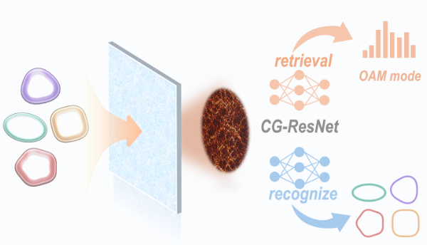
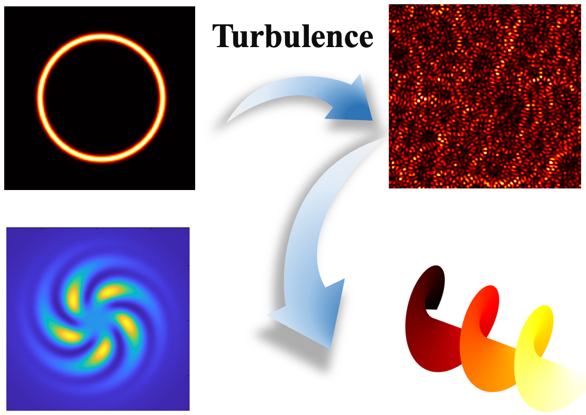
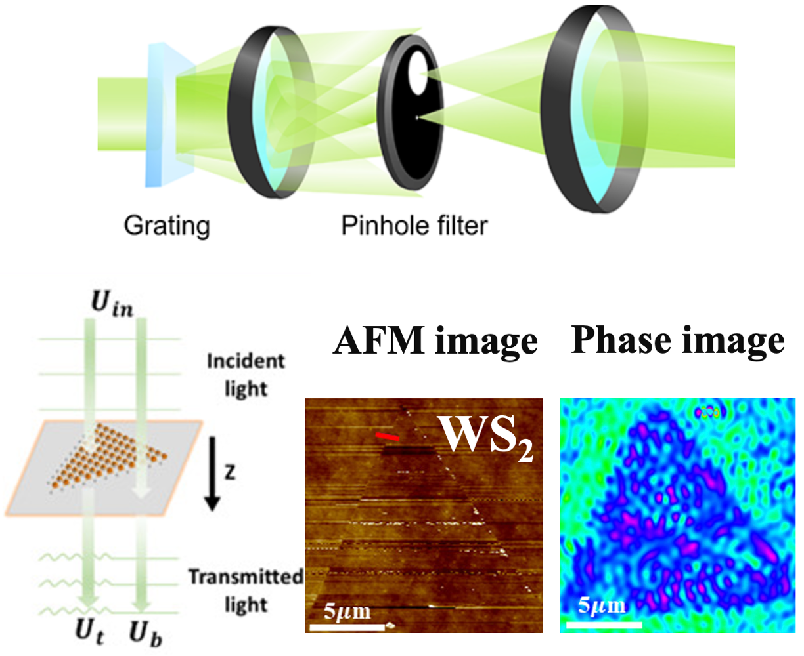

|
Jiaju Wu | 吴镓驹 I am a master student at Sun Yat-sen University, majoring in Optics. My research focuses on structured light, laser speckle, scattering imaging, and quantitative phase microscopy. Email / CV / Google Scholar / ORCID / GitHub |
|
Education
Sun Yat-sen University M.S. in Physics (Recommended Admission) 2025.09 – Present
Sun Yat-sen University B.S. in Physics 2021.09 – 2025.06 |
Publications* first author; ✉ corresponding author. |
|
 |
Dual-dimensional Multiplexing Optical Communication through Scattering Media with Generalized Perfect Optical Vortex
Jiaju Wu*,Yuhan Liu, Rushi Yang, Kaibin Zeng, Shengqiang Zhong, Xiantao Jiang✉ manuscript in preparation, 2026 |
|
 |
High-Order Orbital Angular Momentum Extraction from Vortex-Beam Speckles with Low Spatial Sampling
Jiaju Wu*, Rui Cao, Shengqiang Zhong, Yuhan Liu, Kaibin Zeng, Rushi Yang, Li Yang, Xiantao Jiang✉ Optics & Laser Technology, Under Review, 2026 |
|
 |
Precise characterization of optical constant of two dimensional WS2 using diffraction phase microscopy
Kaibin Zeng*, Weiyuan Li, Wenjun Zhang, Bin Liu, Jiaju Wu, Shengqiang Zhong, Hongwei Zou, Fan Yang, Chao Hou, Lei Xu, Xiang Long Yu✉, Xin Luo✉, Xiantao Jiang✉ Optics & Laser Technology, 2025, 192, 114109 (JCR Q1, IF=5.0) |
Awards & Honors2025 Excellent Bachelor's Thesis (Top 7%), Sun Yat-sen University |
SkillsProgramming: MATLAB, Python, C++ |
|
Template from Jon Barron. |